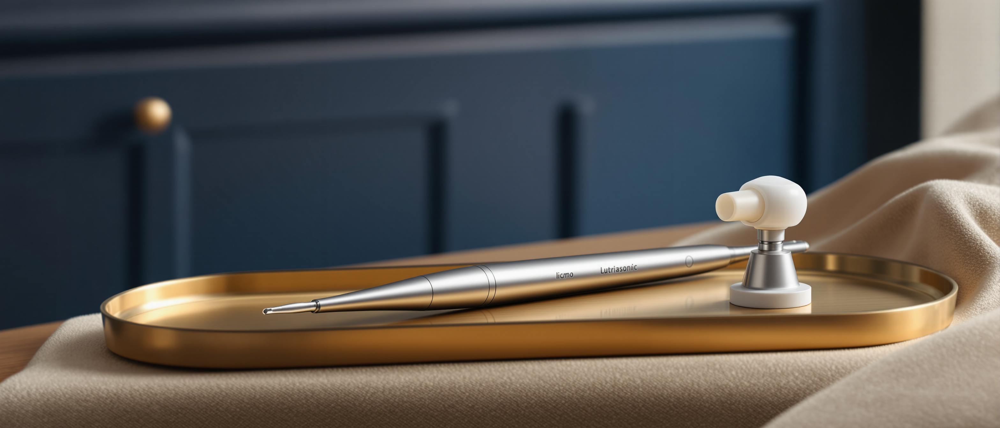

General Dentistry
Owns the maintenance visit end to end: the history, the chart, the scaling, the polish, the fluoride and the date you are asked to come back on.

Oral prophylaxis, the routine clean
Oral prophylaxis is the routine professional clean.
Oral prophylaxis is the routine professional clean: plaque and hardened tartar removed from the tooth surface and from the margin where it meets the gum, then the surfaces smoothed so deposits take longer to rebuild.
Your first consultation is free, and your exact fee is quoted before treatment begins. Confirm current consultation terms with the clinic before you book.

Nine stages, and one of them exists to tell you this is the wrong appointment.
Read straight through for the whole visit in sequence. Jump into the middle and the band names its own position and the one that follows, so the order is never lost.
Next
Stage 01, what tartar actually is, why no amount of brushing shifts it, and why the examination is part of the treatment rather than an addition to it.
Brushing and flossing control plaque. They do not remove tartar.
Once plaque mineralizes against the tooth it becomes calculus, a hard deposit bonded to enamel and to the root below the gum line, and no home routine will shift it. Calculus holds bacteria against the gum, and that is what turns healthy tissue into bleeding, receding tissue.
Oral prophylaxis is the appointment that removes it. An ultrasonic scaler breaks the deposit off the tooth with high-frequency vibration and a water spray, hand instruments finish the areas the tip cannot reach, and the surfaces are then polished so they are smooth rather than microscopically rough. Smooth surfaces give new plaque less to hold on to.
This is the standard maintenance appointment for adults and for children with their permanent teeth.

The examination is not an add-on to the clean. In the same visit your dentist charts gum condition, checks for decay, looks at the soft tissue, and tells you what has changed since your last visit. Most decay and most gum disease are found at a routine appointment, while they are still small problems.
Next
Stage 02, whether this is the appointment your mouth actually needs, and the three cases where the honest answer is a different one.
This suits nearly everyone, on a schedule.
It is the correct treatment if your gums are healthy or mildly inflamed, if you can see hardened deposit behind the lower front teeth or along the margin, and if you simply want the six-month visit done properly.
It suits you particularly if it has been a while. A long gap does not disqualify you from a routine appointment. It usually just means a longer one, and occasionally a second.
If the gum bleeds heavily and generally, or if bone loss shows on imaging, a surface clean is not enough and is not what we will do. Deposit under the gum has to be lifted off the root itself. That treatment is performed by our periodontics specialists, and it usually runs over more than one visit.
The cavity is restored separately. A clean does not repair a cavity, and polishing around active decay changes nothing about it. The examination in this appointment is usually where the cavity is found in the first place.
If what bothers you is the shade of your teeth rather than the health of your gums, this appointment will lift marks off the surface but will not lighten your natural shade. Whitening is the treatment for that, and it is only carried out on a mouth that is already clean and healthy.
Tell us beforehand
If you are pregnant, take a blood thinner, have a heart valve or joint replacement, or have any condition that changes how we handle bleeding or infection risk. Any of these changes how the appointment is run, and it is easier to plan for before you are in the chair.
Stage 03 comes next: the visit broken into its parts, with the minutes each one takes.
Six steps, in this order, with the time each one takes at the chair.
The first step is the one that decides the rest. Everything after it is carried out on a mouth that has already been charted, not on an assumption about what a clean should involve.

| Step | What happens | How long |
|---|---|---|
| 01 Consultation and examination | Medical history, soft-tissue check, decay check, and a gum chart that records pocket depths and bleeding points. This is the step that decides whether a routine clean is the right treatment at all. | 10 to 15 minutes |
| 02 Imaging if indicated | Taken only where the examination raises a question, such as suspected decay between teeth or suspected bone loss. Not routine, and not taken to fill a file. | 5 to 10 minutes |
| 03 Ultrasonic scaling | Hardened deposit is removed from the crown surfaces and from where they meet the gum, with an ultrasonic tip and water spray, quadrant by quadrant. | 10 to 20 minutes |
| 04 Hand instrumentation | The areas an ultrasonic tip cannot finish, particularly tight contacts between the front teeth, are cleared by hand. | 5 to 10 minutes |
| 05 Polishing | Surfaces are polished smooth. Where surface marking is heavy, AirFlow (guided biofilm therapy) may be used in place of a paste. | About 5 minutes |
| 06 Fluoride and review | Fluoride is applied where indicated, and you are shown the specific areas your home routine is missing. | About 5 minutes |
Your calendar
A maintenance appointment runs 45 minutes to an hour. A first visit, or a visit after several years, runs longer and is occasionally split across two appointments so that no quadrant is rushed.
Stage 04 follows: the two disciplines involved, and the finding that hands a case from one to the other.
This appointment is performed by our General Dentistry specialists.
If the chart shows periodontal disease rather than surface build-up, your case moves to our periodontics specialists within the same group, so you are not sent to another practice to finish what was started here. Every clinician who performs this treatment is listed by name, discipline and training on our specialists page.

General Dentistry
Owns the maintenance visit end to end: the history, the chart, the scaling, the polish, the fluoride and the date you are asked to come back on.
Periodontics
Takes the case when the chart shows pocketing, generalized bleeding or bone loss. The handover happens inside the same group and on the same records, which is the reason it happens at all rather than being deferred to your next visit.
Next
Stage 05, the three named systems this visit uses, and the single job each of them is the right instrument for.
Three systems carry this appointment, and each is the right tool for one part of it.
We name the equipment because a name can be checked. An adjective cannot.
Ultrasonic scaling
The working instrument for hardened deposit, with water irrigation to keep the tooth cool and flush the debris clear. It works by vibration rather than by force, which is why it can be used at the margin without gouging the enamel.
Named installed systemAirFlow (guided biofilm therapy)
Used in place of a polishing paste where marking and film are heavy, around brackets and implants, and on bared root surfaces where an abrasive paste would be uncomfortable.
Named installed system3D CBCT imaging
Where the chart suggests bone loss, the periodontal picture is measured in three dimensions in the same building rather than estimated from a flat image or referred out for a scan.
Installed at all four clinicsNext
Stage 06, the starting figure, what moves it, and the one way this clinic is paid.
Anchored to published market ranges, never to an Elevate rate card.
Elevate Dental does not accept HMO or dental insurance. All treatment is self-pay.
HMO coverage cannot be used for dental treatments at our clinics. It is stated in the stage where the money is discussed, because finding it out halfway through a plan is worse than reading it now.
What moves the final figure
Your exact fee is confirmed at consultation, before treatment begins.
Every peso amount on this page is representative, anchored to published market ranges, and is not a price set by Elevate Dental. The fee you are given is quoted per treatment, after a clinical assessment.
Next
Stage 07, what the visit actually leaves behind, and the three things it is not able to change.
A clean does not change your natural shade, close a gap, or repair a cavity.
What it does leave is smooth tooth surfaces, a gum margin free of the deposit that was irritating it, and light marking lifted off the enamel.
Gums that bled on brushing usually stop within one to two weeks, provided the home routine keeps plaque down. Some patients notice slight sensitivity to cold for a few days where deposit had been covering a bared root surface, and it settles.

Next
Stage 08, seven questions, including the two that people are most reluctant to ask out loud.
Nobody needs to apologise for the state of their teeth at a cleaning appointment.
The first two below are the ones people most often ask quietly, and they are answered first for that reason.
Because they are inflamed. Healthy gums do not usually bleed under an instrument. The bleeding is the sign that the deposit needed removing, and it typically stops within one to two weeks afterwards.
Most patients feel vibration, water and light pressure rather than pain. Sensitivity is more common where the gum has receded and the root is bared. Tell your dentist during the appointment and the technique, the tip and the water temperature are adjusted. Where an area is genuinely tender, local anesthetic is available.
Every six months for most adults. Your dentist may set a shorter interval if you smoke, wear fixed braces, have implants, are pregnant, have diabetes, or have a history of gum disease. That decision comes from your chart rather than from a default.
No. Hardened deposit can be splinting teeth that are already mobile from bone loss, and removing it can make that pre-existing mobility noticeable. The instrument works on the deposit, not on the enamel. If your teeth are mobile, that is a periodontal finding and it is charted and treated, not ignored.
It lifts marking off the surface and returns the tooth to its own natural shade. It does not lighten that shade. Going lighter is teeth whitening, a separate treatment carried out after the mouth is clean and healthy.
This treats the crown surfaces and the gum margin in a healthy or mildly inflamed mouth. Scaling and root planing treats the root surface inside a periodontal pocket, is performed under local anesthetic, and is usually split over more than one visit. Your chart decides which one you need.
Yes. Children with their permanent teeth follow the same routine, and our pediatric dentistry specialists handle younger cases and anxious children.
Next
Stage 09, the last one: the half hour afterwards, the habit between visits, and exactly what a first appointment produces.
You can eat and drink straight away, unless fluoride was applied, in which case wait thirty minutes.
A first appointment produces three things: a charted assessment of your gums, the clean itself carried out against what that chart showed, and a fee in writing. None of them commits you to a course of treatment.
Book a free initial consultation, get your gums charted, and have your fee confirmed in writing before treatment starts.
The route ends here on purpose. Nine stages, all of them read: what the deposit is, whether this is your appointment or somebody else's, the sequence at the chair, the two disciplines, the three instruments, the figure and what moves it, what the visit leaves behind, the seven questions, and the habit that decides how the next one goes.
If a stage raised something this page did not answer, bring it to the consultation and it will be answered against your own chart rather than against a page.
Outcome